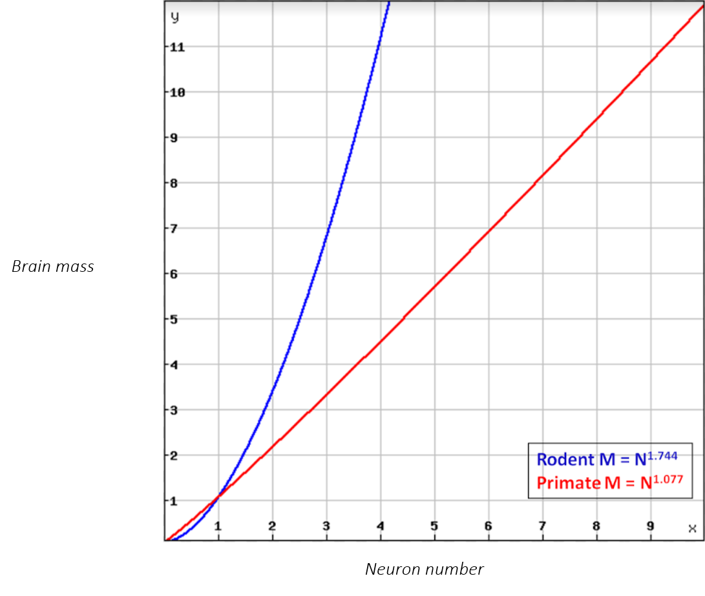

The Primate Brain as a Model for Transformer Plasticity
Since Aristotle, it was thought that there's something unique about the human brain. Aristotle didn't actually think that the brain was responsible for thinking, but he did call it the second most important organ (as a "radiator" for the heart). It is clear that other animals are intelligent (see Frans de Waal for some good examples), but none are investigating their own genomes or trying to build artificial general intelligence. There really does seem to be something interesting about the human brain.
The paradox that other animals -- like elephants and whales -- have larger brains than us, and yet do not produce extraordinary works in the humanities or sciences, was seemingly resolved by Aristotle, who declared that, "of all animals, man has the brain largest in proportion to his size."
This "brain to body size" myth persisted for two thousand years, until Harry Jerison dug into it in the 1970s and discovered that humans have a similar ratio to mice, and that some species of birds have an even more favorable ratio. Jerison proposed his own solution to it by modifying the idea: yes, the ratio is important, but the overall size is, too.
Jerison picked the domestic house cat as a reference species and plotted the expected brain size for any species as one scales the body size up or down, calling it the Encephalization Quotient (EQ). This had the effect of normalizing the ratio, and therefore taking overall size into account. Animals that deviate in the positive direction have a larger-than-expected brain, given their body size, and, sure enough, humans were chief among them.
The idea seemed solid enough, although it never really sufficiently addressed major underlying questions, like why should the ratio matter? Is it implying that we have so much brain that our bodies don't need it for control and so we have leftovers? That seems to fly in the face of what we know about evolution, especially given that the brain is insanely energetically expensive. And what about examples like dinosaurs? The apatosaurus was so big that it was measured in school buses, but is thought to have had a brain the size of a walnut (though it may have had some other small distributed neural centers). So a body doesn't appear to need a tremendous number of neurons to survive.
Suzana Herculano-Houzel called attention to these and other issues with the ratiometric hypotheses by asserting that all of these ideas assume the same number of neurons per unit tissue, even though no one had ever actually looked to see if that was true. So she did!
What Suzana found was that most lineages scale up their brains in a nonlinear way (see the blue line in the plot below). For example, in rodents, if you measure the number of neurons in a mouse, a rat, a capybara (a huge rodent the size of a dog), and several other rodents, you see a number that gets bigger, but not in the way that you'd expect if it were just adding neurons. From these measurements, she derived a scaling factor (this is commonly done in allometric scaling studies). Specifically, the number of neurons scales as a power law relative to the size of the brain at a rate of 1.744, or M = N1.744 (where M is the brain mass and N is the number of neurons).

1.744 is approaching a squared function, so the Y dimension grows much more quickly than the X dimension. The more neurons a rodent has, the larger its brain, but there's a huge rate of diminishing returns as more neurons are added. And most lineages seem to look similar to this. Primates are the only lineage that we know of in which this does not seem to be true: the exponent is 1.077, nearly linear. So the larger a primate brain is, the more neurons it has, period.
This seems to indicate that the neuronal density in non-primates gets much lower. Why that is (larger neurons?) is anyone's guess at the moment, and many other details are still being worked out as well. But one key finding emerges fairly clearly: primate brains seem to be strongly selecting for more computational units. In other words, evolution found a way to keep adding computational units without paying the usual penalty of rapidly increasing brain volume. That may be one of the defining innovations of the primate lineage.
This means that humans have many more neurons in almost* all of our neural systems than other animals -- whether it's learning highly complex physical movements (motor cortex + cerebellar automation), or decision-making and planning (dorsolateral prefrontal cortex), our systems can distribute and parse apart signals to look for more and different kinds of patterns.
In the language of AI, this is analogous to increasing the number of computational units that can learn partially independent representations. Transformer attention heads are one familiar example. Physiologically, the human brain adds "cortical columns" to its neural systems, which are the functional units of the brain. Each cortical column is a duplication of a functional unit which attends to specific details relevant to its position in the brain. The kinds of signals that it can look for depends on the kinds of data that it's receiving.
For example, the brain can turn roughly 100 million binary signals coming from photoreceptors in the eye into the world that we perceive. We go from 100 million yes/no signals into the richly detailed view of the world that sighted humans have by chaining analyses, one after another. The first layer (bipolar cells), takes an average of several primary sensory cells (rods/cones). They do this in a way that their receptive fields overlap in a straight line, so that they can look for simple patterns, like edges and contrasts. The next layer (ganglion cells) build on this by looking for more complex patterns, like shapes and motion, and so on, until it finally arrives in consciousness, annotated with important information.
Each layer only looks for a specific pattern and says "yes, the pattern that I'm sensitive to exists," or "nothing," and the presence of a signal earlier in the chain enables downstream analyses. For example, the contrast of three dark spots (two eyes and a mouth) are built into the system: it's difficult to look at a happy face emoji and see a yellow circle, two black dots, and a black arc, rather than a face. And when that face region is activated, it enables downstream analyses that attempt to read emotion in the face. One does not try to read the emotion of a table automatically because this pattern does not trigger the downstream analyses (though you could consciously ask yourself how a table is feeling).
In much the same way, transformers look for different kinds of relationships between tokens in a sequence. Of course, there are major differences in this analogy that I would be remiss not to acknowledge (mostly at the mechanistic level: transformers project tokens into multidimensional space, point them at each other (in the case of self attention), and evaluate the strength of each relationship, or recombine the features extracted by attention into richer representations in the case of traditional feedforward networks), but the analogy is useful insofar as it nicely describes a higher level architecture that both nature and computer science employ.
But this may be the end of that analogy. A human cortical column, if impressed into the service of another neural pathway early enough in life, can adapt to a different functionality. Biology has long been an inspiration for AI, so this leads to a natural question: can we design general-purpose transformer units that adapt to use cases on the fly?
My own suspicion is that the answer to this is very likely yes, but it will require a lot of work. The human brain is plastic, and the more neurons that are available to a system, the more plastic it is. If this analogy proves useful, it suggests that, if we want to build general-purpose transformer units, we need to build them with many more neurons than we think we'll need for any given task. This is a very different approach than what is currently being done in frontier models (to the best of my knowledge in this moment), in which models are built with static parameters after pretraining. But if we want to build general-purpose AI, we need to build models that can adapt to new tasks on the fly, and that will require continual structural adaptation.
*Elephants have many more neurons in their cerebellums than we do.
Contact
Email: contact@jonathonkeeney.com